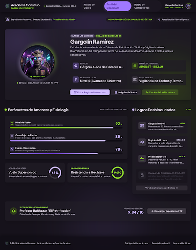
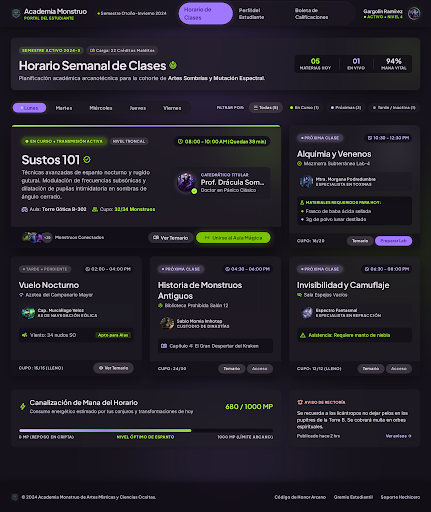
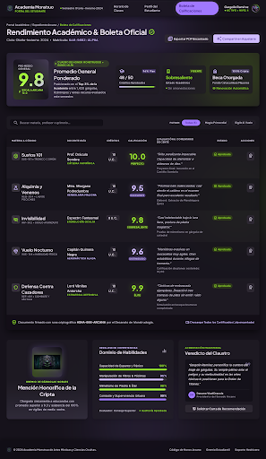

Expedientes Arcanos
Perfil del Estudiante
Ficha biométrica de Gargolín Ramírez: atributos de amenaza, logros desbloqueados y tutor académico.
Abrir vista
Horario Semanal
Horario de Clases
Planificación arcana de la cohorte de Artes Sombrías: materias, instructores y canalización de mana.
Abrir vista
Expediente Académico
Boleta de Calificaciones
Calificaciones del semestre en la Academia Monstruo: materias, promedios y observaciones de la Rectoría.
Abrir vista